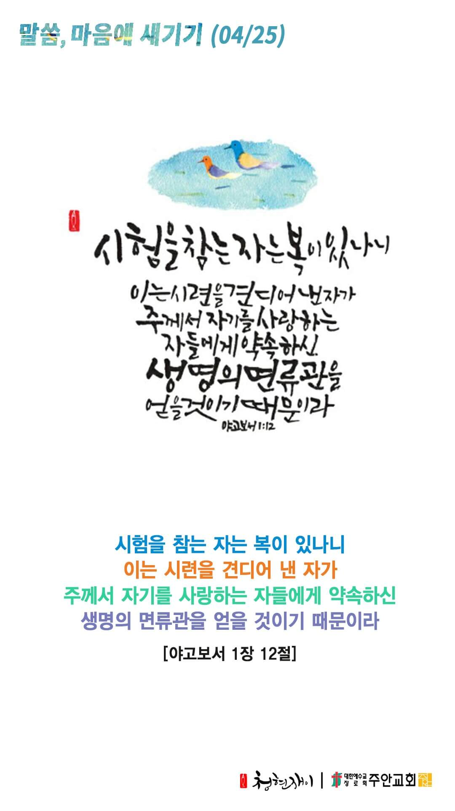

온라인 기도실 안내
2021년 04월25일(일)~05월01일(토)
- 온라인 기도실은 온 회중이 함께 주님 앞으로 나아가는 자리입니다
- 30분 정도 여유를 가지고 하시기 바랍니다
- 말씀과 묵상, 찬양과 기도로 나아갑니다
- 배경 음악이 나올 수 있습니다 볼륨을 조절해주세요
준비가 되셨으면 아래의 버튼을 눌러주세요
할렐루야
내 영혼아 여호와를 찬양하라
시 146:1
- 가사를 묵상하며 읽습니다
1. 나의 기도하는 것보다
더욱 응답하실 하나님
나의 생각하는 것보다
더욱 이루시는 하나님
우리 가운데 역사하신
능력대로 우리들의
간구함을 넘치도록
능히 하실 주님께
할렐루야
내 영혼아 여호와를 찬양하라
시 146:1
- 가사를 묵상하며 읽습니다
모든 영광과 존귀 찬양과
경배를 돌릴지어다
모든 영광과 존귀 찬양과
경배를 돌릴지어다
할렐루야
내 영혼아 여호와를 찬양하라
시 146:1
- 가사를 묵상하며 읽습니다
2. 날이 저물어 갈 때
빈들에서 걸을 때
그 때가 하나님의 때
내 힘으로 안될 때
빈 손으로 걸을 때
내가 고백해 여호와이레
할렐루야
내 영혼아 여호와를 찬양하라
시 146:1
- 가사를 묵상하며 읽습니다
주가 일하시네
주가 일하시네
주께 아끼지 않는 자에게
주가 일하시네
주가 일하시네
신뢰하며 걷는 자에게
할렐루야
내 영혼아 여호와를 찬양하라
시 146:1
나의 기도하는 것보다 & 주가 일하시네
cover by Gina
위의 찬양이 끝나면 말씀읽기를 눌러주시면 됩니다
주의 말씀은 내 발에 등이요
내 길에 빛이니이다 시119:105
오늘의 말씀입니다
음악 소리가 크면 조절하시기 바랍니다

마음의 묵상
약 1:12
“시험을 참는 자는 복이 있나니 이는 시련을 견디어 낸 자가 주께서 자기를 사랑하는 자들에게 약속하신 생명의 면류관을 얻을 것이기 때문이라”
1. 당신의 삶에 어떤 시험이 있나요?
2. 그 시험을 잘 이기고 계신가요?
3. 시험은 참는 자에게 주시는 약속은 무엇인가요?
시험을 이기게 하옵소서
회개, 삶의 방향을 바꾸는 결정
때론 심한 고심과 절망이 우리를 하나님께로 인도합니다
“내 속사람으로는 하나님의 법을 즐거워하되 내 지체 속에서 한 다른 법이 내 마음의 법과 싸워 내 지체 속에 있는 죄의 법으로 나를 사로잡는 것을 보는도다 오호라 나는 곤고한 사람이로다 이 사망의 몸에서 누가 나를 건져내랴”
- 로마서 7장 22-24절 -
3분 정도 회개하며 주님 앞에 나아갑니다
사슴이 시냇물을 찾기에 갈급함 같이
시42:1
- 다음의 말씀을 소리 내어 읽습니다
[로마서 8장 1-4절]
1 그러므로 이제 그리스도 예수 안에 있는 자에게는 결코 정죄함이 없나니
2 이는 그리스도 예수 안에 있는 생명의 성령의 법이 죄와 사망의 법에서 너를 해방하였음이라
사슴이 시냇물을 찾기에 갈급함 같이
시42:1
- 다음의 말씀을 소리 내어 읽습니다
[로마서 8장 1-4절]
3 율법이 육신으로 말미암아 연약하여 할 수 없는 그것을 하나님은 하시나니 곧 죄로 말미암아 자기 아들을 죄 있는 육신의 모양으로 보내어 육신에 죄를 정하사
4 육신을 따르기 않고 그 영을 따라 행하는 우리에게 율법의 요구가 이루어지게 하려 하심이니라
하나님 나라
1. 하나님의 나라가 속히 이 땅에 임하게 하소서
하나님 아버지,
미얀마의 유혈사태가 그치고 전쟁과 분열 가운데 있는 모든 나라와 민족에 평화가 임하게 하소서.
미얀마와 전 세계에 나가 계신 선교사님들과 그 가족들을 지켜주시고, 그들을 통하여 선교의 새 문이 열리게 하소서.
간절한 마음으로 3분 정도 기도합시다
남과 북
2. 남북한이 속히 복음으로 통일되게 하소서
하나님 아버지,
북한의 인권유린이 멈춰지게 하시고, 그 땅에 체제 변화, 자유, 평화를 향한 갈망이 일어나게 하소서.
북한 지하교회 성도들과 정치범, 장애인, 소외 받는 이들을 긍휼히 여겨주시고, 그들에게 필요한 것들을 채워주소서.
간절한 마음으로 3분 정도 기도합시다
대한민국
3. 우리나라가 하나님을 경외하는 나라가 되게 하소서
하나님 아버지,
다시 확산되는 코로나19가 진정되게 하시고, 속히 백신과 치료제가 공급되게 하소서.
하나님의 마음으로 나라와 민족을 섬길 각계각층의 지도자들을 세워주시고, 그들이 하나님
나라를 위한 사명을 깨닫고 하나님의 말씀에 순종하게 하소서.
간절한 마음으로 3분 정도 기도합시다
한국교회
4. 한국교회가 성령으로 새롭게 부흥되게 하소서
하나님 아버지,
한국교회가 더욱 더 주님만을 바라보고, 말씀에 순종하여 주님이 기뻐하시는 정결한 교회가 되게 하소서.
교회를 떠난 가나안 성도들이 다시 교회 공동체로 돌아와 주님을 위해 살아가게 하시고,
한국교회에 새로운 부흥의 역사가 일어나게 하소서.
간절한 마음으로 3분 정도 기도합시다
주안교회
5. 주안교회가 다음 세대를 세우는 선교적 교회가 되게 하소서
하나님 아버지,
오직 아버지의 말씀만이 진리임을 믿습니다. 그리고 하나님의 약속의 말씀은 반드시 이루어짐을 믿습니다.
주안의 모든 성도들이 생명의 말씀, 능력의 말씀을 붙잡고 살게 하사, 말씀의 역사하심을 매일 매순간
경험하며 승리의 삶을 살게 하소서.
간절한 마음으로 3분 정도 기도합시다
감사의 기도
- 오늘 기도를 인도하신 주님께 감사를 올려드립니다
- 아래의 구절을 읽고 주님께 감사의 마음을 올려드립시다
“너희는 마음에 근심하지 말라 하나님을 믿으니 또 나를 믿으라”
- 요한복음 14장 1절 -
고요한 가운데 잠시 침묵하시기 바랍니다
파송, 세상을 향하여
- 오늘의 온라인 기도를 마쳤습니다
기도를 들으신 주님께서 평안히 가라 하십니다
주님께서 우리와 함께 하시니 두려울 것이 없습니다
새벽을 깨우며
- 새벽기도회 안내입니다